Firstborn
She learned responsibility early.
A life. A family. A legacy.
Hono · August 11, 1979
Every life begins quietly.
Long before people called her Mama Watu Wengi, long before she became a mother and a leader, there was simply a little girl named Grace.
She was the firstborn.
Life did not give her everything easily. At times, she lived among many who looked down upon her and made her feel small.
But being underestimated never became her identity.
She kept moving. She kept hoping. She kept believing that her story could become something greater than the circumstances she had been given.
"They could underestimate her circumstances. They could never determine her future."
A little piece of this day, kept forever.
Growing Up
Being the firstborn meant learning responsibility early.
There were seasons when life placed her in homes where she was not always treated with the dignity she deserved.
Some people looked at her circumstances and decided she was insignificant.
But Grace never accepted someone else's estimation of her worth.
She carried something stronger than the opinions around her: hope.
And hope became action.
As she entered adulthood, she began working in different health facilities, serving people while continuing to build a life of her own.
The road was not easy. There were difficult seasons, uncertain moments, and responsibilities that demanded strength.
But she kept going.
"She never needed life to be easy before she decided it was worth living well."
She learned responsibility early.
Even when others underestimated her, she refused to let their opinions define her.
Her early adulthood took her through different health facilities, where she continued serving others.
A little piece of this day, kept forever.
Grace & Peter
Somewhere along the journey, two lives found each other.
Grace met Peter in her teenage years.
And slowly, two individual stories began becoming one.
Life would test them in ways neither could have completely predicted.
But when the difficult seasons came, Peter stood beside her.
He became a strong pillar for Grace and for the family they would build together.
He encouraged her to chase her dreams, stood by her when life was difficult, and worked to provide for the family.
Together, they built something much bigger than a household.
They built a home.
Hopeful. Resilient. Determined.
Creative. Steady. Protective.
FAMILY
"Two lives. Two journeys. One family."
A little piece of this day, kept forever.
Peter · Husband · Father · Mentor
Behind every great chapter of Mum's story was someone who stood beside her.
His name is Peter.
When life was difficult, he remained a pillar.
He encouraged her to keep going.
He provided for the family.
And while Mum taught us how to believe in ourselves, Dad taught us how to look at the world with curiosity.
Especially the engineer in me.
Peter · Husband · Father · Mentor
Behind every great chapter of Mum's story was someone who stood beside her.
His name is Peter.Dad was there for Mum when life was difficult. He encouraged her, supported her dreams, and remained a strong pillar for the family.
Outside the house, he is a senior police officer. A serious man. A no-nonsense man. Someone people respect. But at home, he is simply Dad.
I remember mending fences with him, going to the farm, grazing, building things and learning the basic things a man should know. Those moments seemed ordinary then. Looking back, they were lessons.
Dad always seemed to find a way to make me curious. He would create, repair, improvise and find solutions. Watching him made me want to understand how things worked.
Long before I knew what engineering really meant, I already knew I wanted to build things. That curiosity eventually became part of the reason I chose engineering.
Some lessons are never written down.
They are built into you.A little piece of this day, kept forever.
Home
A family is not built in a single moment.
It is built quietly — through ordinary mornings, difficult evenings, shared meals, responsibilities, laughter, discipline, sacrifice and countless small acts of love.
Grace and Peter built their family one day at a time.
Whytney came first. Dylan followed. Then Mitchell. Then Greg.
And somehow, the home became more than the people who lived inside it.
There was always room for someone else.
A visitor could walk through the door and, before long, feel less like a visitor and more like family.
That is how a house became a home.
And that home would eventually become a place where many people came looking for something money could never buy: someone who would listen.
Where many stories found a place to rest.
Mother to many.
There is something interesting about our home.
You can walk in and sometimes wonder which children actually belong there.
During the corona period especially, the house would fill with children.
But they weren't always there simply to play or eat.
Some came because they needed someone to talk to.
And they knew where to find her.A sentence she hears from people more often than she probably realizes.
To us, she's Mum.
To many others, she's Mama Watu Wengi.A little piece of this day, kept forever.
Sometimes, that is all someone needs to say after being heard.
Some memories fade with time. Others become part of who we are.

Before the titles, the responsibilities and the family, there was simply Grace.
Life was still unfolding, one experience at a time.
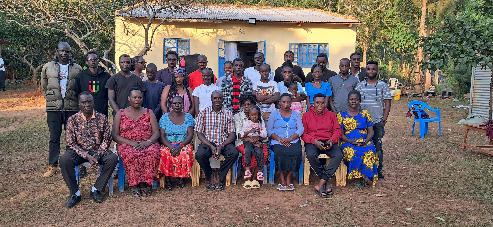
A family built through countless ordinary moments.
FAMILY
"Some homes have walls. Some homes have warmth. The rare ones have both."
A little piece of this day, kept forever.
Mfangano Island · Primary School
For a while, it was just the two of us. Mum was working on Mfangano Island, and I was doing my schooling there — fishing, learning to swim, coming home with fish and watching her fry them. Ordinary days that became extraordinary memories.
When Mum decided the education there wasn't good enough, she brought me home. Because that's what she always did — she looked out for us.
Back home, some of my teachers believed I was below average. Mum never accepted that conclusion. She pushed me, encouraged me, reminded me I was capable of more.
Eventually, the boy they'd underestimated became the boy at the top of his class — and stayed there. That belief followed me all the way into the same curiosity Dad had already begun building in me.
Because someone believed first.
"She never allowed someone else's opinion to become my identity."
A little piece of this day, kept forever.
Four Lives · One Mother
A mother's legacy isn't measured only by what she achieved.
Sometimes, it is standing right in front of her.
Not just Four children, but Many of them.
Many different personalities.
Many different journeys.
And behind each of them, a mother who kept believing.
These are their voices.
Each of us carries a different piece of her story.
"Many lives. One woman behind them all."
A little piece of this day, kept forever.
From Your Children
We grew up differently.
We became different people.
We have different memories, different personalities, and different dreams.
But there is one thing we all share.
We know what it means to be your children.
And today, we want you to hear what that means to us.
Four lives.
Many Different paths.
Many Different dreams.
One woman behind them all.A little piece of this day, kept forever.
A Legacy In Motion
You began with little.
You carried responsibilities that were never easy.
You worked.
You sacrificed.
You became a wife.
You became a mother.
You became a leader.
You became someone people came looking for when they needed hope.
And somewhere along the way, you built something far greater than a career or a home.
You built people.
A family that loves you.
Children who carry your lessons.
People who remember your kindness.
A home where others feel welcome.
A life that became an example.
You didn't simply raise a family.
You gave people somewhere to belong.A little piece of this day, kept forever.
Years of Grace
Happy Birthday,
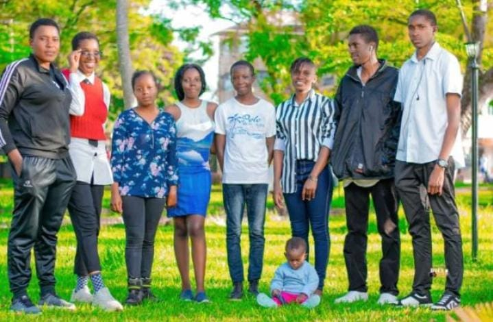
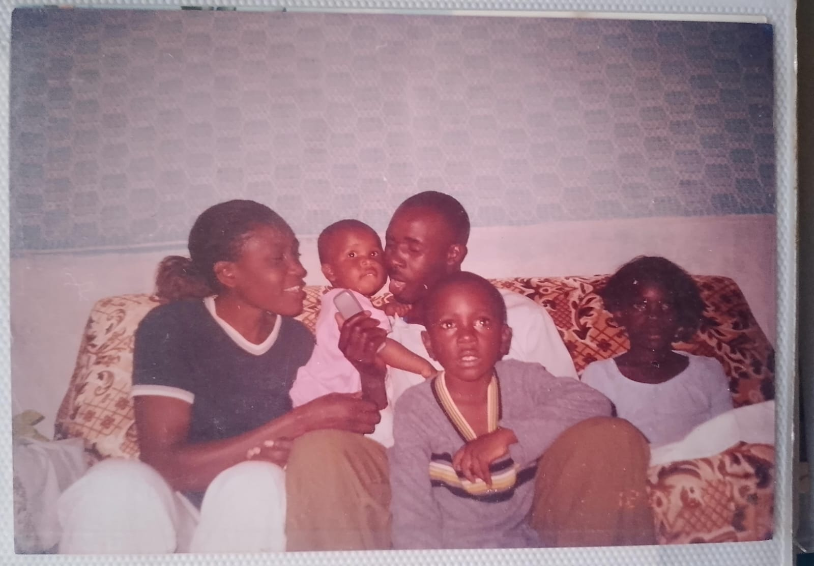
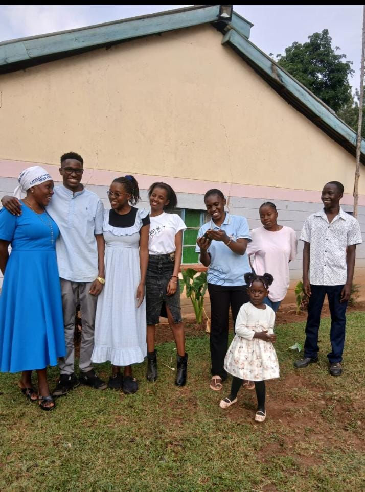
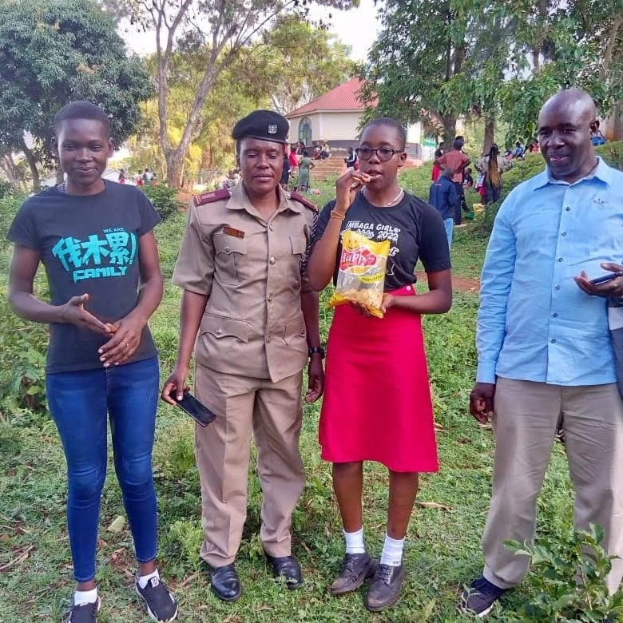
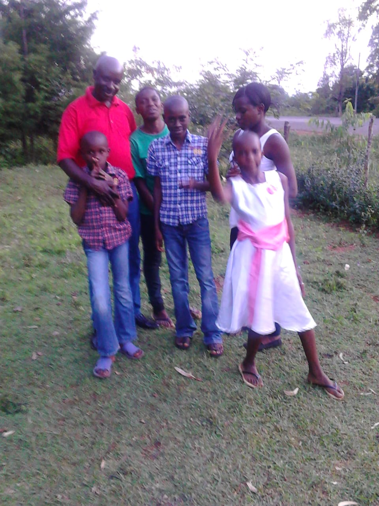
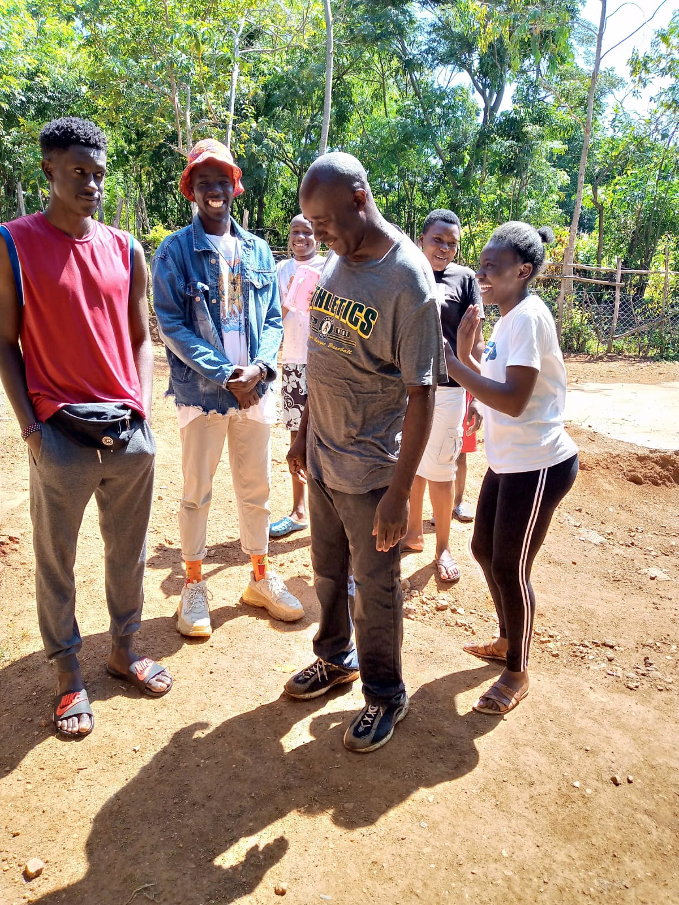
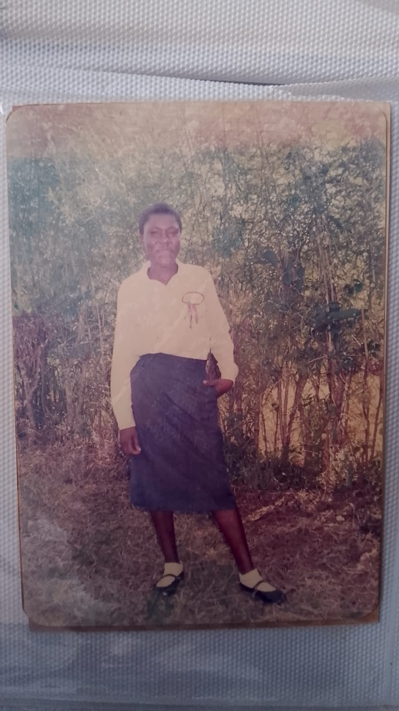
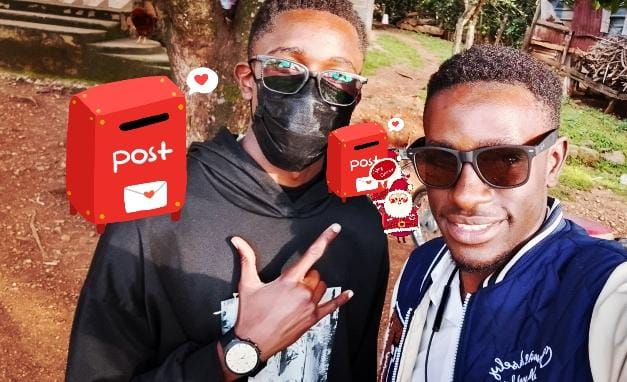
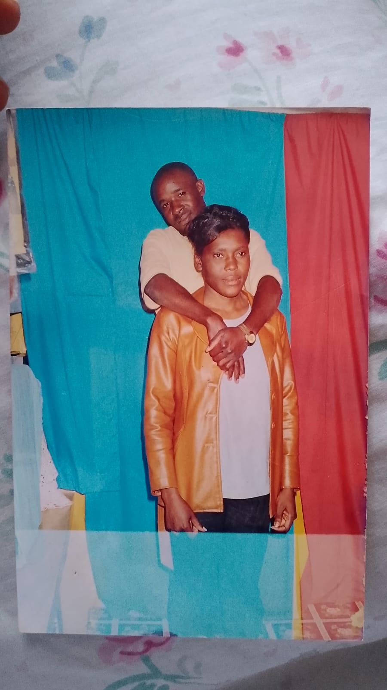
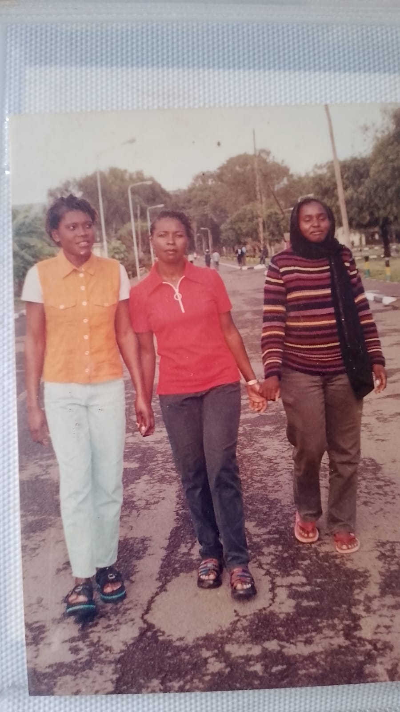
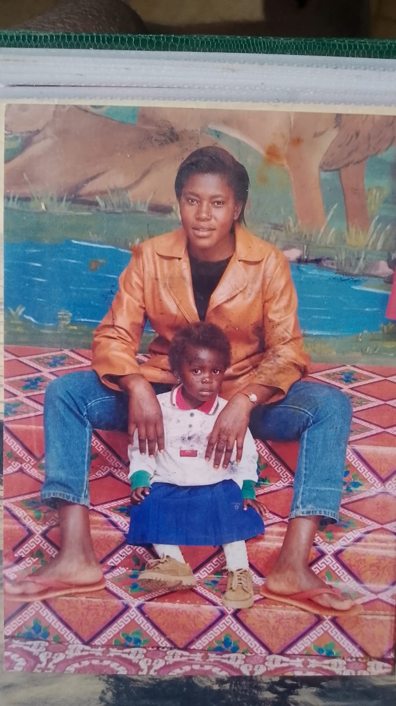
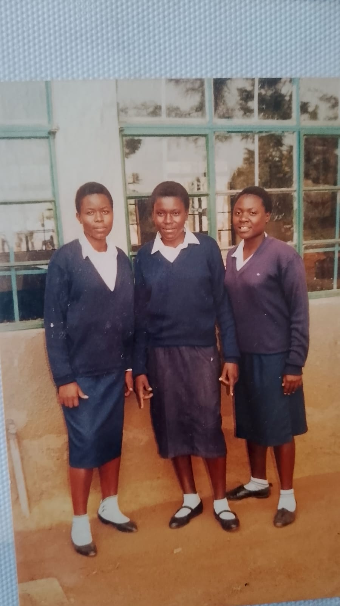
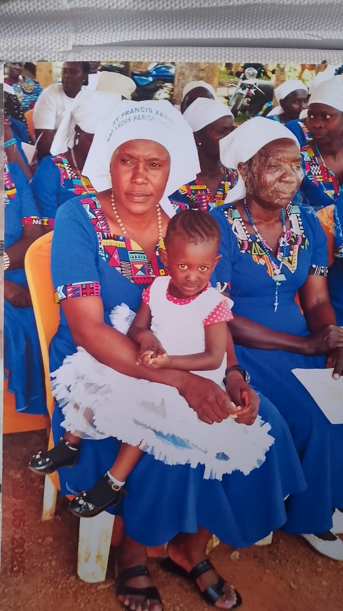
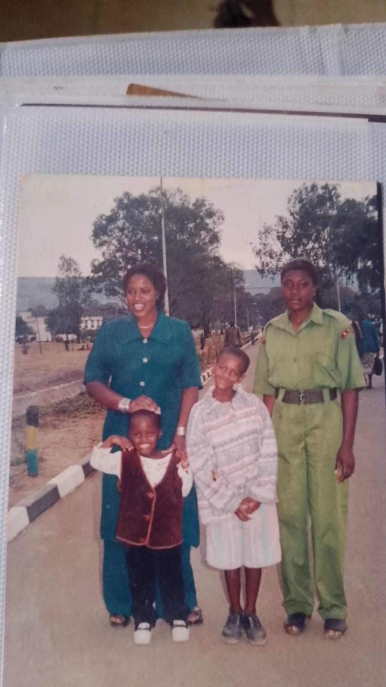

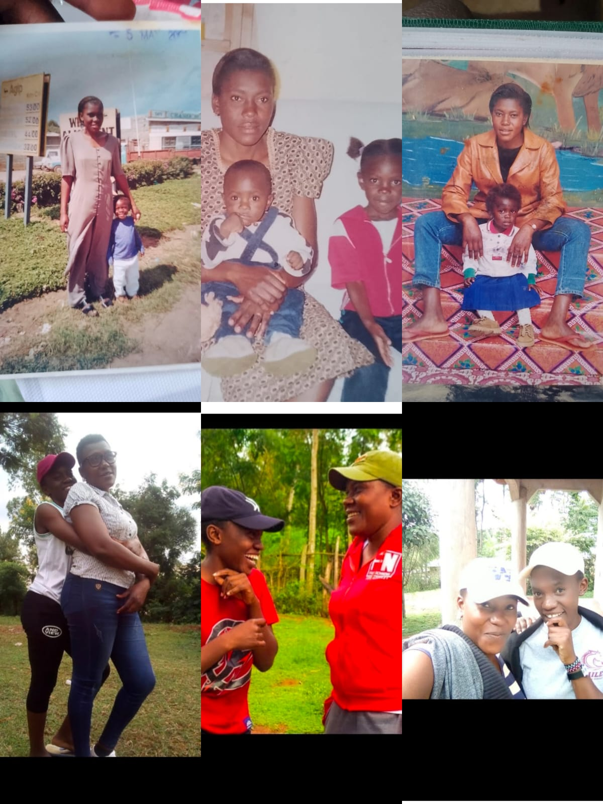
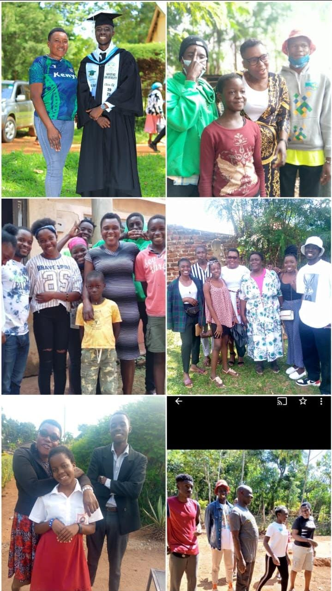
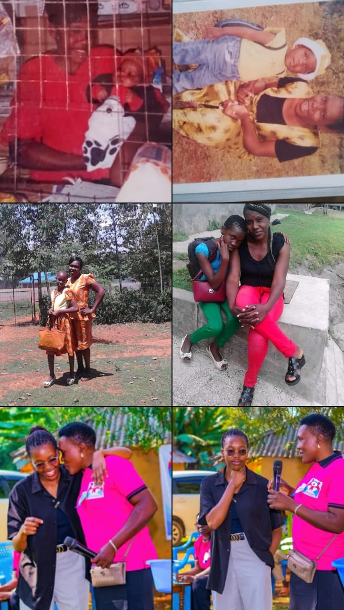
A little piece of this day, kept forever.